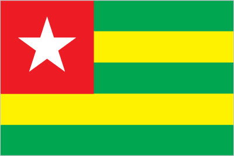

Africa :: TOGO
Introduction :: TOGO
-
French Togoland became Togo in 1960. Gen. Gnassingbe EYADEMA, installed as military ruler in 1967, ruled Togo with a heavy hand for almost four decades. Despite the facade of multi-party elections instituted in the early 1990s, the government was largely dominated by President EYADEMA, whose Rally of the Togolese People (RPT) party has been in power almost continually since 1967 and its successor, the Union for the Republic, maintains a majority of seats in today's legislature. Upon EYADEMA's death in February 2005, the military installed the president's son, Faure GNASSINGBE, and then engineered his formal election two months later. Democratic gains since then allowed Togo to hold its first relatively free and fair legislative elections in October 2007. Since 2007, President GNASSINGBE has started the country along a gradual path to political reconciliation and democratic reform, and Togo has held multiple presidential and legislative elections that were deemed generally free and fair by international observers. Despite those positive moves, political reconciliation has moved slowly and many Togolese complain that important political measures such as presidential term limits and electoral reforms remain undone, leaving the country’s politics in a lethargic state. Internationally, Togo is still known as a country where the same family has been in power for five decades.
Geography :: TOGO
-
Western Africa, bordering the Bight of Benin, between Benin and Ghana8 00 N, 1 10 EAfricatotal: 56,785 sq kmland: 54,385 sq kmwater: 2,400 sq kmcountry comparison to the world: 127slightly smaller than West Virginiatotal: 1,880 kmborder countries (3): Benin 651 km, Burkina Faso 131 km, Ghana 1,098 km56 kmterritorial sea: 30 nmexclusive economic zone: 200 nmtropical; hot, humid in south; semiarid in northgently rolling savanna in north; central hills; southern plateau; low coastal plain with extensive lagoons and marshesmean elevation: 236 melevation extremes: lowest point: Atlantic Ocean 0 mhighest point: Mont Agou 986 mphosphates, limestone, marble, arable landagricultural land: 67.4%arable land 45.2%; permanent crops 3.8%; permanent pasture 18.4%forest: 4.9%other: 27.7% (2011 est.)70 sq km (2012)one of the more densely populated African nations with most of the population residing in rural communities, density is highest in the south on or near the Atlantic coasthot, dry harmattan wind can reduce visibility in north during winter; periodic droughtsdeforestation attributable to slash-and-burn agriculture and the use of wood for fuel; water pollution presents health hazards and hinders the fishing industry; air pollution increasing in urban areasparty to: Biodiversity, Climate Change, Climate Change-Kyoto Protocol, Desertification, Endangered Species, Law of the Sea, Ozone Layer Protection, Ship Pollution, Tropical Timber 83, Tropical Timber 94, Wetlands, Whalingsigned, but not ratified: none of the selected agreementsthe country's length allows it to stretch through six distinct geographic regions; climate varies from tropical to savanna
People and Society :: TOGO
-
7,965,055note: estimates for this country explicitly take into account the effects of excess mortality due to AIDS; this can result in lower life expectancy, higher infant mortality, higher death rates, lower population growth rates, and changes in the distribution of population by age and sex than would otherwise be expected (July 2017 est.)country comparison to the world: 99noun: Togolese (singular and plural)adjective: TogoleseAfrican (37 tribes; largest and most important are Ewe, Mina, and Kabre) 99%, European and Syrian-Lebanese less than 1%French (official, the language of commerce), Ewe and Mina (the two major African languages in the south), Kabye (sometimes spelled Kabiye) and Dagomba (the two major African languages in the north)Christian 29%, Muslim 20%, indigenous beliefs 51%Togo’s population is estimated to have grown to four times its size between 1960 and 2010. With nearly 60% of its populace under the age of 25 and a high annual growth rate attributed largely to high fertility, Togo’s population is likely to continue to expand for the foreseeable future. Reducing fertility, boosting job creation, and improving education will be essential to reducing the country’s high poverty rate. In 2008, Togo eliminated primary school enrollment fees, leading to higher enrollment but increased pressure on limited classroom space, teachers, and materials. Togo has a good chance of achieving universal primary education, but educational quality, the underrepresentation of girls, and the low rate of enrollment in secondary and tertiary schools remain concerns.Togo is both a country of emigration and asylum. In the early 1990s, southern Togo suffered from the economic decline of the phosphate sector and ethnic and political repression at the hands of dictator Gnassingbe EYADEMA and his northern, Kabye-dominated administration. The turmoil led 300,000 to 350,000 predominantly southern Togolese to flee to Benin and Ghana, with most not returning home until relative stability was restored in 1997. In 2005, another outflow of 40,000 Togolese to Benin and Ghana occurred when violence broke out between the opposition and security forces over the disputed election of EYADEMA’s son Faure GNASSINGBE to the presidency. About half of the refugees reluctantly returned home in 2006, many still fearing for their safety. Despite ethnic tensions and periods of political unrest, Togo in September 2017 was home to more than 9,600 refugees from Ghana.0-14 years: 40.29% (male 1,610,020/female 1,599,105)15-24 years: 19.2% (male 763,507/female 765,884)25-54 years: 32.79% (male 1,297,489/female 1,314,130)55-64 years: 4.31% (male 161,809/female 181,180)65 years and over: 3.41% (male 117,409/female 154,522) (2017 est.)total dependency ratio: 81.2youth dependency ratio: 76.2elderly dependency ratio: 5.1potential support ratio: 19.8 (2015 est.)total: 19.8 yearsmale: 19.5 yearsfemale: 20.1 years (2017 est.)country comparison to the world: 1932.64% (2017 est.)country comparison to the world: 1633.3 births/1,000 population (2017 est.)country comparison to the world: 296.9 deaths/1,000 population (2017 est.)country comparison to the world: 1340 migrant(s)/1,000 population (2017 est.)country comparison to the world: 97one of the more densely populated African nations with most of the population residing in rural communities, density is highest in the south on or near the Atlantic coasturban population: 41% of total population (2017)rate of urbanization: 3.6% annual rate of change (2015-20 est.)LOME (capital) 956,000 (2015)at birth: 1.03 male(s)/female0-14 years: 1.01 male(s)/female15-24 years: 1 male(s)/female25-54 years: 0.99 male(s)/female55-64 years: 0.89 male(s)/female65 years and over: 0.76 male(s)/femaletotal population: 0.98 male(s)/female (2016 est.)21 yearsnote: median age at first birth among women 25-29 (2013/14 est.)368 deaths/100,000 live births (2015 est.)country comparison to the world: 32total: 42.2 deaths/1,000 live birthsmale: 48.5 deaths/1,000 live birthsfemale: 35.7 deaths/1,000 live births (2017 est.)country comparison to the world: 44total population: 65.4 yearsmale: 62.8 yearsfemale: 68.1 years (2017 est.)country comparison to the world: 1774.38 children born/woman (2017 est.)country comparison to the world: 2619.9% (2013/14)5.2% of GDP (2014)country comparison to the world: 1360.06 physicians/1,000 population (2008)0.7 beds/1,000 population (2011)improved:urban: 91.4% of populationrural: 44.2% of populationtotal: 63.1% of populationunimproved:urban: 8.6% of populationrural: 55.8% of populationtotal: 36.9% of population (2015 est.)improved:urban: 24.7% of populationrural: 2.9% of populationtotal: 11.6% of populationunimproved:urban: 75.3% of populationrural: 97.1% of populationtotal: 88.4% of population (2015 est.)2.1% (2016 est.)country comparison to the world: 25100,000 (2016 est.)country comparison to the world: 425,100 (2016 est.)country comparison to the world: 30degree of risk: very highfood or waterborne diseases: bacterial and protozoal diarrhea, hepatitis A, and typhoid fevervectorborne diseases: malaria, dengue fever, and yellow feverrespiratory disease: meningococcal meningitiswater contact disease: schistosomiasisanimal contact disease: rabies (2016)8.4% (2016)country comparison to the world: 15116.2% (2014)country comparison to the world: 415.3% of GDP (2015)country comparison to the world: 91definition: age 15 and over can read and writetotal population: 63.7%male: 77.3%female: 51.2% (2015 est.)total: 12 yearsmale: NAfemale: NA (2011)
Government :: TOGO
-
conventional long form: Togolese Republicconventional short form: Togolocal long form: Republique Togolaiselocal short form: noneformer: French Togolandetymology: derived from the Ewe words "to" (water) and "go" (shore) to give the sense of "by the water"; originally, this designation applied to the town of Togo (now Togoville) on the northern shore of Lake Togo, but the name was eventually extended to the entire nationpresidential republicname: Lomegeographic coordinates: 6 07 N, 1 13 Etime difference: UTC 0 (5 hours ahead of Washington, DC, during Standard Time)5 regions (regions, singular - region); Centrale, Kara, Maritime, Plateaux, Savanes27 April 1960 (from French-administered UN trusteeship)Independence Day, 27 April (1960)history: several previous; latest adopted 27 September 1992, effective 14 October 1992amendments: proposed by the president of the republic or supported by at least one-fifth of the National Assembly membership; passage requires four-fifths majority vote by the Assembly; a referendum is required if approved by only two-thirds majority of the Assembly or if requested by the president; constitutional articles on the republican and secular form of government cannot be amended; amended 2002, 2007 (2017)customary law systemaccepts compulsory ICJ jurisdiction with reservations; non-party state to the ICCtcitizenship by birth: nocitizenship by descent only: at least one parent must be a citizen of Togodual citizenship recognized: yesresidency requirement for naturalization: 5 years18 years of age; universalchief of state: President Faure GNASSINGBE (since 4 May 2005)head of government: Prime Minister Komi KLASSOU (since 5 June 2015)cabinet: Council of Ministers appointed by the president on the advice of the prime ministerelections/appointments: president directly elected by simple majority popular vote for a 5-year term (no term limits); election last held on 25 April 2015 (next to be held in 2020); prime minister appointed by the presidentelection results: Faure GNASSINGBE reelected president; percent of vote - Faure GNASSINGBE (UNIR) 58.8%, Jean-Pierre FABRE (ANC) 35.2%, Tchaboure GOGUE (ADDI) 4%, other 2%description: unicameral National Assembly or Assemblee Nationale (91 seats; members directly elected in multi-seat constituencies by proportional representation vote to serve 5-year terms)elections: last held on 25 July 2013 (next to be held in 2018)election results: percent of vote by coalition/party - UNIR 46.7%, CST 28.9%, Rainbow Alliance 10.8%, UFC 7.7%, independent 0.8%, other 5.1%; seats by coalition/party - UNIR 62, CST 19, Rainbow Alliance 6, UFC 3, independent 1highest court(s): Supreme Court or Cour Supreme (organized into criminal and administrative chambers, each with a chamber president and advisors); Constitutional Court (consists of 9 judges including the court president)judge selection and term of office: Supreme Court president appointed by decree of the president of the republic upon the proposal of the Supreme Council of the Magistracy, a 9-member judicial, advisory, and disciplinary body; other judge appointments and judge tenure NA; Constitutional Court judges appointed by the National Assembly; judge tenure NAsubordinate courts: Court of Assizes (sessions court); Appeal Court; tribunals of first instance (divided into civil, commercial, and correctional chambers; Court of State Security; military tribunalAction Committee for Renewal or CAR [Yaovi AGBOYIBO]Alliance of Democrats for Integral Development or ADDI [Tchaboure GOGUE]Combat for Political Change in 2015 or CAP 2015 [Jean-Pierre FABRE]Democratic Convention of African Peoples or CDPA [Brigitte ADJAMAGBO-JOHNSON]Democrastic Forces for the Republic or FDR [Dodji APEVON]National Alliance for Change or ANC [Jean-Pierre FABRE]New Togolese Commitment [Gerry TAAMA]Pan-African National Party or PNP [Tikpi ATDCHADAM]Pan-African Patriotic Convergence or CPP [Edem KODJO]Rainbow Alliance (a coalition including CAR and CDPA) [Brigitte ADJAMAGBO-JOHNSON]Socialist Pact for Renewal or PSR [Abi TCHESSA]The Togolese Party [Nathaniel OLYMPIO]Union of Forces for Change or UFC [Gilchrist OLYMPIO]Union for the Republic or UNIR [Faure GNASSINGBE]NAACP, AfDB, AU, ECOWAS, EITI (compliant country), Entente, FAO, FZ, G-77, IAEA, IBRD, ICAO, ICRM, IDA, IDB, IFAD, IFC, IFRCS, ILO, IMF, IMO, Interpol, IOC, IOM, IPU, ISO (correspondent), ITSO, ITU, ITUC (NGOs), MIGA, MINURSO, MINUSMA, NAM, OIC, OIF, OPCW, PCA, UN, UNAMID, UNCTAD, UNESCO, UNHCR, UNIDO, UNMIL, UNOCI, UNWTO, UPU, WADB (regional), WAEMU, WCO, WFTU (NGOs), WHO, WIPO, WMO, WTOchief of mission: Ambassador Frederic Edem HEGBE (since 24 April 2017)chancery: 2208 Massachusetts Avenue NW, Washington, DC 20008telephone: [1] (202) 234-4212FAX: [1] (202) 232-3190chief of mission: Ambassador David R. GILMOUR (20 December 2015)embassy: 4332 Blvd. Gnassingbe Eyadema, Cite OUA, Lomemailing address: B.P. 852, Lome; 2300 Lome Place, Washington, DC 20521-2300telephone: [228] 2261-5470FAX: [228] 2261-5501five equal horizontal bands of green (top and bottom) alternating with yellow; a white five-pointed star on a red square is in the upper hoist-side corner; the five horizontal stripes stand for the five different regions of the country; the red square is meant to express the loyalty and patriotism of the people; green symbolizes hope, fertility, and agriculture; yellow represents mineral wealth and faith that hard work and strength will bring prosperity; the star symbolizes life, purity, peace, dignity, and Togo's independencenote: uses the popular Pan-African colors of Ethiopialion; national colors: green, yellow, red, whitename: "Salut a toi, pays de nos aieux" (Hail to Thee, Land of Our Forefathers)lyrics/music: Alex CASIMIR-DOSSEHnote: adopted 1960, restored 1992; this anthem was replaced by another during one-party rule between 1979 and 1992
Economy :: TOGO
-
Togo is enjoying a period of steady economic growth fueled by political stability and a concerted effort by the government to modernize the country’s commercial infrastructure. The country has recently completed an ambitious large-scale infrastructure improvement program, including new principal roads, a new airport terminal, and a new sea-port. The economy depends heavily on both commercial and subsistence agriculture, which provides employment for around 60% of the labor force. Some basic foodstuffs must still be imported. Cocoa, coffee, and cotton and other agricultural products generate about 20% of export earnings with cotton being the most important cash crop. Togo is among the world's largest producers of phosphate and seeks to develop its carbonate phosphate reserves, which provide more than 20% of export earnings.The government's decade-long effort, supported by the World Bank and the IMF, to implement economic reform measures, encourage foreign investment, and bring revenues in line with expenditures has moved slowly. Togo completed its IMF Extended Credit Facility in 2011 and reached a Heavily Indebted Poor Country debt relief completion point in 2010 at which 95% of the country's debt was forgiven. Togo continues to work with the IMF on structural reforms, and is currently finalizing IMF approval for an agreement on an Extended Credit Facility arrangement consisting of a three-year $238 million loan package. Progress depends on follow through on privatization, increased openness in government financial operations, progress toward legislative elections, and continued support from foreign donors.Togo’s 2016 economic growth remained steady at 5.3%, largely driven by infusions of foreign aid, infrastructure investment in the port and mineral sectors, and improvements in the business climate. Foreign direct investment inflows have slowed in recent years.$11.64 billion (2016 est.)$10.95 billion (2015 est.)$10.28 billion (2014 est.)note: data are in 2016 dollarscountry comparison to the world: 154$4.434 billion (2016 est.)5% (2016 est.)5.3% (2015 est.)5.4% (2014 est.)country comparison to the world: 37$1,500 (2016 est.)$1,500 (2015 est.)$1,500 (2014 est.)note: data are in 2016 dollarscountry comparison to the world: 21717.6% of GDP (2016 est.)15.9% of GDP (2015 est.)15.7% of GDP (2014 est.)country comparison to the world: 145household consumption: 81.2%government consumption: 16.5%investment in fixed capital: 24.8%investment in inventories: -1.4%exports of goods and services: 38.8%imports of goods and services: -59.9% (2016 est.)agriculture: 29%industry: 21.1%services: 49.9% (2016 est.)coffee, cocoa, cotton, yams, cassava (manioc, tapioca), corn, beans, rice, millet, sorghum; livestock; fishphosphate mining, agricultural processing, cement, handicrafts, textiles, beverages7.1% (2016 est.)country comparison to the world: 242.595 million (2007 est.)country comparison to the world: 115agriculture: 65%industry: 5%services: 30% (1998 est.)6.9% (2016 est.)country comparison to the world: 8955.1% (2015 est.)lowest 10%: 3.3%highest 10%: 27.1% (2006)46 (2011)country comparison to the world: 34revenues: $1.228 billionexpenditures: $1.483 billion (2016 est.)27.7% of GDP (2016 est.)country comparison to the world: 99-5.7% of GDP (2016 est.)country comparison to the world: 16671.6% of GDP (2016 est.)74% of GDP (2015 est.)country comparison to the world: 49calendar year0.9% (2016 est.)1.8% (2015 est.)country comparison to the world: 822.5% (31 December 2010)4.25% (31 December 2009)country comparison to the world: 112NA%$1.118 billion (31 December 2016 est.)$1.14 billion (31 December 2015 est.)country comparison to the world: 151$2.239 billion (31 December 2016 est.)$2.184 billion (31 December 2015 est.)country comparison to the world: 148$1.62 billion (31 December 2016 est.)$1.65 billion (31 December 2015 est.)country comparison to the world: 156$NA$-431 million (2016 est.)$-460.8 million (2015 est.)country comparison to the world: 98$967.4 million (2016 est.)$1.011 billion (2015 est.)country comparison to the world: 158reexports, cotton, phosphates, coffee, cocoaBenin 17.5%, Burkina Faso 15.9%, India 7.6%, Mali 7.2%, Niger 7%, Cote dIvoire 6.1%, Ghana 4.8%, Nigeria 4.3% (2016)$1.981 billion (2016 est.)$2.043 billion (2015 est.)country comparison to the world: 162machinery and equipment, foodstuffs, petroleum productsChina 28.7%, France 8.9%, Netherlands 4.3%, Japan 4.2% (2016)$42.6 million (31 December 2016 est.)$73.9 million (31 December 2015 est.)country comparison to the world: 172$1.22 billion (31 December 2016 est.)$1.056 billion (31 December 2015 est.)country comparison to the world: 164Communaute Financiere Africaine francs (XOF) per US dollar -593.01 (2016 est.)593.01 (2015 est.)591.45 (2014 est.)494.42 (2013 est.)510.53 (2012 est.)
Energy :: TOGO
-
population without electricity: 5,000,000electrification - total population: 27%electrification - urban areas: 35%electrification - rural areas: 21% (2013)78.8 million kWh (2015 est.)country comparison to the world: 2011.213 billion kWh (2015 est.)country comparison to the world: 1520 kWh (2016 est.)country comparison to the world: 2041.242 billion kWh (2015 est.)country comparison to the world: 63229,000 kW (2015 est.)country comparison to the world: 16269.9% of total installed capacity (2015 est.)country comparison to the world: 1050% of total installed capacity (2015 est.)country comparison to the world: 19229.3% of total installed capacity (2015 est.)country comparison to the world: 730.9% of total installed capacity (2015 est.)country comparison to the world: 1430 bbl/day (2016 est.)country comparison to the world: 2010 bbl/day (2014 est.)country comparison to the world: 1980 bbl/day (2014 est.)country comparison to the world: 1970 bbl (1 January 2017 es)country comparison to the world: 2010 bbl/day (2014 est.)country comparison to the world: 20214,000 bbl/day (2015 est.)country comparison to the world: 1530 bbl/day (2014 est.)country comparison to the world: 20312,700 bbl/day (2014 est.)country comparison to the world: 1360 cu m (2013 est.)country comparison to the world: 2020 cu m (2013 est.)country comparison to the world: 1370 cu m (2013 est.)country comparison to the world: 1940 cu m (2013 est.)country comparison to the world: 1950 cu m (1 January 2014 es)country comparison to the world: 2001.8 million Mt (2013 est.)country comparison to the world: 152
Communications :: TOGO
-
total subscriptions: 33,817subscriptions per 100 inhabitants: 0 (July 2016 est.)country comparison to the world: 155total: 5,505,424subscriptions per 100 inhabitants: 71 (July 2016 est.)country comparison to the world: 121general assessment: fair system based on a network of microwave radio relay routes supplemented by open-wire lines and a mobile-cellular systemdomestic: microwave radio relay and open-wire lines for conventional system; combined fixed-line and mobile-cellular teledensity roughly 70 telephones per 100 persons with mobile-cellular use predominatinginternational: country code - 228; satellite earth stations - 1 Intelsat (Atlantic Ocean), 1 Symphonie (2016)1 state-owned TV station with multiple transmission sites; 5 private TV stations broadcast locally; cable TV service is available; state-owned radio network with multiple stations; several dozen private radio stations and a few community radio stations; transmissions of multiple international broadcasters available (2017).tgtotal: 877,310percent of population: 11.3% (July 2016 est.)country comparison to the world: 138
Transportation :: TOGO
-
number of registered air carriers: 1inventory of registered aircraft operated by air carriers: 8annual passenger traffic on registered air carriers: 769,904annual freight traffic on registered air carriers: 0 mt-km (2015)5V (2016)8 (2013)country comparison to the world: 163total: 22,438 to 3,047 m: 2 (2013)total: 6914 to 1,523 m: 4under 914 m: 2 (2013)total: 568 kmnarrow gauge: 568 km 1.000-m gauge (2014)country comparison to the world: 112total: 11,652 kmpaved: 2,447 kmunpaved: 9,205 km (2007)country comparison to the world: 13050 km (seasonally navigable by small craft on the Mono River depending on rainfall) (2011)country comparison to the world: 102total: 61by type: bulk carrier 6, cargo 38, carrier 3, chemical tanker 5, container 3, passenger/cargo 1, petroleum tanker 3, refrigerated cargo 1, roll on/roll off 1foreign-owned: 21 (China 1, Lebanon 6, Romania 1, Syria 6, Turkey 4, UAE 1, US 1, Yemen 1) (2010)country comparison to the world: 66major seaport(s): Kpeme, Lome
Military and Security :: TOGO
-
1.86% of GDP (2016)1.71% of GDP (2015)1.85% of GDP (2014)1.77% of GDP (2013)1.63% of GDP (2012)Togolese Armed Forces (Forces Armees Togolaise, FAT): Togolese Army (l'Armee de Terre); update State, April 2017, Togolese Navy (Forces Naval Togolaises), Togolese Air Force (Force Aerienne Togolaise, TAF), National Gendarmerie (2017)18 years of age for military service; 2-year service obligation; currently the military is only an all-volunteer force (2017)
Transnational Issues :: TOGO
-
in 2001, Benin claimed Togo moved boundary monuments - joint commission continues to resurvey the boundary; talks continue between Benin and Togo on funding the Adjrala hydroelectric dam on the Mona Riverrefugees (country of origin): 9,677 (Ghana) (2017)transit hub for Nigerian heroin and cocaine traffickers; money laundering not a significant problem